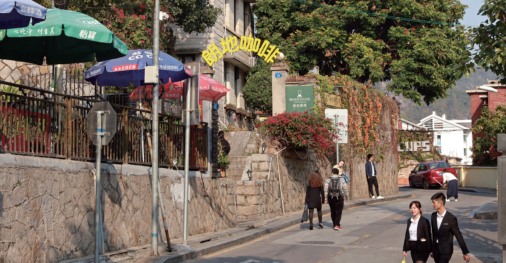

Быт и образ жизни
Статуя Фэншие
Фэншие – это отгоняющие злой дух статуи львов, установленные возле воротОтправить королевкую лодку
Сделал лодку королю, посадил короля в лодку, поджег возле берегаВера Фудэ
Храм на горе Сяньюэшань имеет длинную историюВера в Чи Ванъе
Согласно легенде, у Чи Ванъе была фамилия Чи и имя ЖаньВера в Баошэн Дади
Дадаогун, с фамилией У и именем Тао (ТАО), при жизни был прекрасным врачом
Храм Брахмы
Брахма Храм был основан в династии Суй
Храм Наньпуто
Храм Наньпуто расположен на севере и выходит фасадом на югСтарый поселок Цанцзян
Старый Цанцзян проходит через эту старую улицуУлица Хуасиньлу
Также известный как ？Overseas Chinese Village？- 
Улица Наньхуалу
Находится рядом с Сямэньским университетом
читать больше
 330445074@qq.com
330445074@qq.com 12345
12345